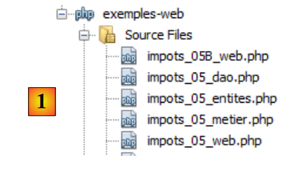

11. Ejercicio IMPOTS con un servicio WEB y una arquitectura de tres capas
Retomaremos el ejercicio IMPOTS (véanse los apartados 4.2, 4.3 y 6) y lo convertiremos en una aplicación cliente/servidor. El script del servidor se dividirá en tres elementos:
- una capa denominada [dao] (Data Access Objects) que se encargará de las comunicaciones con la base de datos MySQL
- una capa denominada [métier] que se encargará del cálculo del impuesto
- una capa [web] que se encargará de las comunicaciones con la web clients.
 |
El script de cliente [1]:
- envía al script del servidor los tres datos ($marié, $enfants, $salaire) necesarios para el cálculo del impuesto
- muestra la respuesta del servidor en la consola
El script de servidor [2] está formado por la capa [web] del servidor.
- Al inicio de una nueva sesión de cliente, almacenará en tablas los datos de la base de datos MySQL y [dbimpots]. Para ello, utilizará la capa [dao]. Las tablas así creadas se colocarán en la sesión del cliente para que puedan utilizarse en futuras consultas del cliente.
- Durante una consulta del cliente, pasará los tres datos ($marié, $enfants, $salaire) a la capa [métier], que calculará el impuesto $impot.
- El script del servidor devolverá el impuesto $impôt calculado.
11.1. El script del cliente (clients_impots_05_web)
El script de cliente será un cliente del servicio web de cálculo del impuesto. Enviará (POST) al servidor los parámetros en el siguiente formato:
params=$casado,$hijos,$salario donde
- $marié será la cadena «sí» o «no»,
- $enfants será el número de hijos,
- $salaire será el salario del contribuyente
Encuentra los tres parámetros anteriores en un archivo de texto [data.txt] en el formato (casado, hijos, salario):
El script del cliente
- leerá el archivo de texto [data.txt] línea por línea
- enviará la cadena params=$marié,$enfants,$salaire al servicio web de cálculo de impuestos
- recogerá la respuesta del servicio. Esta respuesta puede adoptar dos formas:
- guardará la respuesta del servidor en un archivo de texto [resultats.txt] en una de las dos formas siguientes:
El código del script del cliente es el siguiente:
<?php
// cliente impuestos
// gestión de errores
ini_set("display_errors", "off");
// ---------------------------------------------------------------------------------
// una clase de funciones de utilidad
class Utilitaires {
function cutNewLinechar($ligne) {
...
}
}
// main -----------------------------------------------------
// definición de constantes
$DATA = "data.txt";
$RESULTATS = "resultats.txt";
// datos del servidor
$HOTE = "localhost";
$PORT = 80;
$urlServeur = "/exemples-web/impots_05_web.php";
// los parámetros de los contribuyentes (estado civil, número de hijos, salario anual)
// se han incluido en el archivo de texto $DATA a razón de una línea por contribuyente
// los resultados (estado civil, número de hijos, salario anual, impuesto a pagar)
// o (estado civil, número de hijos, salario anual, mensaje de error) se han colocado en
// el archivo de texto $RESULTATS a razón de un resultado por línea
// clase Utilidades
$u = new Utilitaires();
// apertura del archivo de datos de los contribuyentes
$data = fopen($DATA, "r");
if (!$data) {
print "Impossible d'ouvrir en lecture le fichier des données [$DATA]\n";
exit;
}
// apertura del archivo de resultados
$résultats = fopen($RESULTATS, "w");
if (!$résultats) {
print "Impossible de créer le fichier des résultats [$RESULTATS]\n";
exit;
}
// se procesa la línea actual del archivo de datos de los contribuyentes
while ($ligne = fgets($data, 100)) {
// se elimina el posible carácter de fin de línea
$ligne = $u->cutNewLineChar($ligne);
// se recuperan los 3 campos «casado:hijos:salario» que forman $ligne
list($marié, $enfants, $salaire) = explode(",", $ligne);
// se calcula el impuesto
list($erreur, $impôt) = calculerImpot($HOTE, $PORT, $urlServeur, $cookie, array($marié, $enfants, $salaire));
// se introduce el resultado
$résultat = $erreur ? "$marié:$enfants:$salaire:$erreur" : "$marié:$enfants:$salaire:$impôt";
fputs($résultats, "$résultat\n");
// dato siguiente
}
// se cierran los archivos
fclose($data);
fclose($résultats);
// fin
print "Terminé...\n";
exit;
function calculerImpot($HOTE, $PORT, $urlServeur, &$cookie, $params) {
// conecta al cliente a ($HOTE,$PORT,$urlServeur)
// envía la cookie $cookie si esta no está vacía. $cookie se pasa por referencia
// envía $params al servidor
// procesa la única línea devuelta por el servidor
// apertura de una conexión en el puerto 80 de $HOTE
$connexion = fsockopen($HOTE, $PORT);
// ¿error?
if (!$connexion)
return array("erreur lors de la connexion au serveur ($HOTE, $PORT)");
// los encabezados (headers) del protocolo HTTP deben terminar con una línea en blanco
// POST
fputs($connexion, "POST $urlServeur HTTP/1.1\n");
// Host
fputs($connexion, "Host: localhost\n");
// Conexión
fputs($connexion, "Connection: close\n");
// se envía la cookie si no está vacía
if ($cookie) {
fputs($connexion, "Cookie: $cookie\n");
}//if
// ahora se envía la instrucción al cliente tras haberla codificado
$infos = "params=" . urlencode(implode(",", $params));
// se indica qué tipo de información se va a enviar
fputs($connexion, "Content-type: application/x-www-form-urlencoded\n");
// se envía el tamaño (número de caracteres) de la información que se va a enviar
fputs($connexion, "Content-length: " . strlen($infos) . "\n");
// se envía una línea en blanco
fputs($connexion, "\n");
// se envía la información
fputs($connexion, $infos);
// se muestra la respuesta del servidor web
// y nos aseguramos de recuperar la posible cookie
while ($ligne = fgets($connexion, 1000)) {
// cookie: solo en la primera respuesta
if (!$cookie) {
if (preg_match("/^Set-Cookie: (.*?)\s*$/", $ligne, $champs)) {
$cookie = $champs[1];
}//if
}
// en cuanto haya una línea en blanco, la respuesta HTTP ha terminado
if (trim($ligne) == "") {
break;
}
}//while
// lectura de la línea del resultado
$ligne = fgets($connexion, 1000);
// se cierra la conexión
fclose($connexion);
// cálculo del resultado
$erreur="";
$impôt="";
if (preg_match("/^<erreur>(.*?)<\/erreur>\s*$/", $ligne, $champs)) {
$erreur = $champs[1];
} else {
if (preg_match("/^<impot>(.*?)<\/impot>\s*$/", $ligne, $champs)) {
$impôt = $champs[1];
}else{
$erreur="résultat du serveur non exploitable";
}
}
// retorno
return array($erreur, $impôt);
}
Comentarios
El código del script de cliente retoma elementos ya vistos:
- líneas 9-15: la clase [Utilitaires] se presentó en version 3, apartado 6
- líneas 17-68: el programa principal es análogo al de la version 1, apartado 4.2. Solo difiere en el cálculo del impuesto, línea 56.
- línea 56: la función de cálculo del impuesto admite los siguientes parámetros:
- $HOTE, $PORT, $urlServeur: permiten conectarse al servicio web
- $cookie: es la cookie de sesión. Este parámetro se pasa por referencia. Su valor lo establece la función de cálculo del impuesto. En la primera llamada, no tiene valor. A partir de entonces, sí lo tiene.
- array($marié, $enfants, $salaire): representa una línea del archivo [data.txt]
La función de cálculo del impuesto devuelve una tabla con dos resultados ($erreur, $impôt), donde $erreur es un posible mensaje de error y $impôt el importe del impuesto.
- líneas 70 – 134: aquí tenemos un cliente clásico Http como los que hemos visto muchas veces. Cabe destacar los siguientes puntos:
- línea 83: los parámetros ($marié, $enfants, $salaire) se transmiten al servidor mediante un POST
- líneas 89-91: si el cliente tiene un identificador de sesión, lo envía al servidor
- línea 93: creación del parámetro params
- línea 101: envío del parámetro params
- líneas 104-115: el cliente lee todos los encabezados Http enviados por el servidor hasta encontrar la línea vacía que marca el final de los encabezados. Aprovecha para recuperar el identificador de sesión en la respuesta a su primera solicitud.
- líneas 123-125: se procesa una posible línea con el formato <error>mensaje</error>
- líneas 126-128: se hace lo mismo con una posible línea del tipo <impot>importe</impot>
- línea 133: se devuelve el resultado
11.2. El servicio web de cálculo de impuestos
Aquí nos centramos en los tres scripts que componen el servidor:
 |
El proyecto Netbeans correspondiente es el siguiente:
 |
En [1], el servidor está formado por los siguientes scripts PHP:
- [impots_05_entites] contiene las clases utilizadas por el servidor
- [impots_05_dao] contiene las clases e interfaces de la capa [dao]
- [impots_05_metier] contiene las clases e interfaces de la capa [metier]
- [impots_05_web] contiene las clases e interfaces de la capa [dao]
Comenzamos presentando dos clases que utilizan las diferentes capas del servicio web.
11.2.1. Las entidades del servicio web (impots_05_entites)
La base MySQL [dbimpots] tiene una tabla [impots] que contiene los datos necesarios para el cálculo del impuesto [1]:
 |
Almacenaremos los datos de la tabla MySQL [impots] en una matriz de objetos Tranche, donde Tranche es la siguiente clase:
<?php
// un tramo impositivo
class Tranche {
// campos privados
private $limite;
private $coeffR;
private $coeffN;
// getters y setters
public function getLimite() {
return $this->limite;
}
public function setLimite($limite) {
$this->limite = $limite;
}
public function getCoeffR() {
return $this->coeffR;
}
public function setCoeffR($coeffR) {
$this->coeffR = $coeffR;
}
public function getCoeffN() {
return $this->coeffN;
}
public function setCoeffN($coeffN) {
$this->coeffN = $coeffN;
}
// constructor
public function __construct($limite, $coeffR, $coeffN) {
$this->setLimite($limite);
$this->setCoeffR($coeffR);
$this->setCoeffN($coeffN);
}
// toString
public function __toString(){
return "[$this->limite,$this->coeffR,$this->coeffN]";
}
}
Los campos privados [$limite, $coeffR, $coeffN] servirán para almacenar las columnas [limites, coeffR, coeffN] de una fila de la tabla MySQL [impots].
Por otra parte, el código del servidor utilizará una excepción propia, la clase ImpotsException:
- línea 1: la clase [ImpotsException] deriva de la clase [Exception] predefinida en PHP 5
- línea 3: el constructor de la clase [ImpotsException] admite dos parámetros:
- $message: un mensaje de error
- $code: un código de error
11.2.2. La capa [dao] (impots_05_dao)
La capa [dao] garantiza el acceso a los datos de la base de datos:
 |
La capa [dao] presenta la siguiente interfaz:
La interfaz IImpotsDao solo expone la función getData. Esta función coloca en una matriz de objetos Tranche las diferentes líneas de la tabla MySQL [dbimpots.impots].
La clase de implementación es la siguiente:
<?php
// capa Dao
// dependencias
require_once "impots_05_entites.php";
// constantes
define("TABLE", "impots");
// -----------------------------------------------------------------
// implementación abstracta
abstract class ImpotsDaoWithPdo implements IImpotsDao {
// campos privados
private $dsn;
private $user;
private $passwd;
private $tranches;
// getters y setters
public function getDsn() {
return $this->dsn;
}
public function setDsn($dsn) {
$this->dsn = $dsn;
}
public function getUser() {
return $this->user;
}
public function setUser($user) {
$this->user = $user;
}
public function getPasswd() {
return $this->passwd;
}
public function setPasswd($passwd) {
$this->passwd = $passwd;
}
// constructor
public function __construct($dsn, $user, $passwd) {
// se guardan los parámetros
$this->setDsn($dsn);
$this->setUser($user);
$this->setPasswd($passwd);
// se recuperan los datos de SGBD
// conecta ($user,$pwd) a la base de datos $dsn
try {
// conexión
$connexion = new PDO($dsn, $user, $passwd, array(PDO::ATTR_PERSISTENT => true));
// lectura de la tabla $TABLE
$requête = "select limites,coeffR,coeffN from " . TABLE;
// ejecuta la consulta $requête en la conexión $connexion
$statement = $connexion->prepare($requête);
$statement->execute();
// procesamiento del resultado de la consulta
while ($colonnes = $statement->fetch()) {
$this->tranches[] = new Tranche($colonnes[0], $colonnes[1], $colonnes[2]);
}
// desconexión
$connexion=NULL;
} catch (PDOException $e) {
// retorno con error
throw new ImpotsException($e->getMessage(), 1);
}
}
public function getData(){
return $this->tranches;
}
}
- línea 5: la implementación de la interfaz [IImpotsDao] necesita las clases definidas en el script [impots_05_entites].
- línea 11: definición de una clase abstracta. Una clase abstracta es una clase que no se puede instanciar. Una clase abstracta debe derivarse obligatoriamente para poder instanciarse. Una clase puede declararse abstracta porque no se puede instanciar (algunos de sus métodos no están definidos) o porque no se desea instanciarla. En este caso, no se desea instanciar la clase [ImpotsDaoWithPdo]. Se instanciarán clases derivadas.
- línea 11: la clase [ImpotsDaoWithPdo] implementa la interfaz [IImpotsDao]. Por lo tanto, debe definir el método getData. Este método se encuentra en las líneas 72-74.
- línea 14: $dsn (Data Fuente Name) es una cadena de caracteres que identifica de forma única el SGBD y la base de datos utilizada.
- línea 15: $user identifica al usuario que se conecta a la base de datos
- línea 16: $passwd es la contraseña del usuario anterior
- línea 17: $tranches es la tabla de objetos Tranche en la que se va a almacenar la tabla MySQL [dbimpots.impots].
- líneas 45-70: el constructor de la clase. Este código ya se ha visto en version 4, apartado 8.2. Cabe señalar que la construcción del objeto [ImpotsDaoWithPdo] puede fallar. En ese caso, se lanza una excepción de tipo [ImpotsException].
- Líneas 72-74: el método [getData] de la interfaz [IImpotsDao].
La clase [ImpotsDaoWithPdo] es compatible con cualquier SGBD. El constructor de la clase, en la línea 45, requiere conocer el Data Fuente Name de la base de datos. Esta cadena de caracteres depende del SGBD utilizado. Se ha optado por no exigir al usuario de la clase que conozca este Data Fuente Name. Para cada SGBD, habrá una clase específica derivada de [ImpotsDaoWithPdo]. Para el SGBD MySQL, será la siguiente clase:
class ImpotsDaoWithMySQL extends ImpotsDaoWithPdo {
public function __construct($host, $port, $base, $user, $passwd) {
parent::__construct("mysql:host=$host;dbname=$base;port=$port", $user, $passwd);
}
}
- En la línea 3, el constructor no solicita el Data Fuente Name, sino simplemente el nombre del equipo host del SGBD ($host), su puerto de escucha ($port) y el nombre de la base de datos ($base).
- línea 4, el Data Fuente Name de la base de datos MySQL se construye y se utiliza para llamar al constructor de la clase padre.
Cabe señalar que, para adaptarse a otro SGBD, basta con escribir la clase derivada de [ImpotsDaoWithPdo] que sea adecuada. En cada caso, se trata de construir el Data Fuente Name específico del SGBD utilizado.
11.2.3. La capa [métier] (impots_05_metier)
La capa [metier] contiene la lógica del cálculo del impuesto:
 |
La capa [métier] presenta la siguiente interfaz:
<?php
// interfaz de negocio
interface IImpotsMetier {
public function calculerImpot($marié, $enfants, $salaire);
}
La interfaz [IImpotsMetier] solo expone un método, el método [calculerImpot], que permite calcular el impuesto de un contribuyente a partir de los siguientes parámetros:
- $marié: cadena «sí» o «no», dependiendo de si el contribuyente está casado o no
- $enfants: el número de hijos del contribuyente
- $salaire: su salario
Es la capa [web] la que le proporcionará estos parámetros.
La implementación de la interfaz [IImpotsMetier] es la siguiente:
// dependencias
require_once "impots_05_dao.php";
// ------------------------------------------------------------------
// clase de implementación
class ImpotsMetier implements IImpotsMetier {
// capa dao
private $dao;
// matriz de objetos [Tranche]
private $data;
// getter y setter
public function getDao() {
return $this->dao;
}
public function setDao($dao) {
$this->dao = $dao;
}
public function setData($data){
$this->data=$data;
}
public function __construct($dao) {
// se recuperan los datos necesarios para el cálculo del impuesto
$this->setDao($dao);
$this->setData($this->dao->getData());
}
public function calculerImpot($marié, $enfants, $salaire) {
// $marié: sí, no
// $enfants: número de hijos
// $salaire: salario anual
// número de partes
$marié = strtolower($marié);
if ($marié == "oui")
$nbParts = $enfants / 2 + 2;
else
$nbParts=$enfants / 2 + 1;
// media participación más si hay al menos 3 hijos
if ($enfants >= 3)
$nbParts+=0.5;
// renta imponible
$revenuImposable = 0.72 * $salaire;
//: coeficiente familiar
$quotient = $revenuImposable / $nbParts;
// se coloca al final de la tabla de límites para detener el bucle siguiente
$N = count($this->data);
$this->data[$N - 1]->setLimite($quotient);
// cálculo del impuesto
$i = 0;
while ($i < $N and $quotient > $this->data[$i]->getLimite()) {
$i++;
}
// debido a que se ha colocado $quotient al final de la tabla $limites, el bucle anterior
// no puede salirse de la tabla $limites
// ahora podemos calcular el impuesto
return floor($revenuImposable * $this->data[$i]->getCoeffR() - $nbParts * $this->data[$i]->getCoeffN());
}
}
- línea 2: la capa [métier] necesita las clases de la capa [dao] y las entidades (Tranche, ImpotsException).
- línea 6: la clase [ImpotsMetier] implementa la interfaz [IimpotsMetier].
- Líneas 9-11: los campos privados de la clase:
- $dao: referencia a la capa [dao]
- $data: matriz de objetos de tipo [Tranche] proporcionada por la capa [dao]
- líneas 26-30: el constructor de la clase inicializa los dos campos anteriores. Recibe como parámetro una referencia a la capa [dao].
- líneas 32-61: implementación del método [calculerImpot] de la interfaz [IimpotsMetier]. Este método ya aparecía en version 1 (apartado 4.2).
11.2.4. La capa [web] (impots_05_web)
La capa [metier] contiene la lógica del cálculo del impuesto:
 |
La capa [web] está constituida por el servicio web que responde a clients web. Recordemos que estos envían una solicitud al servicio web publicando el siguiente parámetro: params=casado,hijos,salario. Se trata de un servicio web tal y como los hemos construido en los párrafos anteriores. Su código es el siguiente:
<?php
// capa de negocio
require_once "impots_05_metier.php";
// gestión de errores
ini_set("display_errors", "off");
// encabezado UTF-8
header("Content-Type: text/plain; charset=utf-8");
// ------------------------------------------------------------------------------
// el servicio web de impuestos
// definición de constantes
$HOTE = "localhost";
$PORT = 3306;
$BASE = "dbimpots";
$USER = "root";
$PWD = "";
// los datos necesarios para el cálculo del impuesto se han colocado en la tabla mysql IMPOTS
// perteneciente a la base de datos $BASE. La tabla tiene la siguiente estructura
// límites decimal(10,2), coeffR decimal(6,2), coeffN decimal(10,2)
// los parámetros de las personas sujetas a impuestos (estado civil, número de hijos, salario anual)
// son enviados por el cliente en el formato params=estado civil, número de hijos, salario anual
// los resultados (estado civil, número de hijos, salario anual, impuesto a pagar) se devuelven al cliente
// en el formato <impuesto>impuesto</impuesto>
// o en el formato <error>error</error>, si los parámetros no son válidos
// se recupera la capa [métier] en la sesión
session_start();
if (!isset($_SESSION['metier'])) {
// instanciación de la capa [dao] y de la capa [métier]
try {
$_SESSION['metier'] = new ImpotsMetier(new ImpotsDaoWithMySQL($HOTE, $PORT, $BASE, $USER, $PWD));
} catch (ImpotsException $ie) {
print "<erreur>Erreur : " . utf8_encode($ie->getMessage() . "</erreur>");
exit;
}
}
$metier = $_SESSION['metier'];
// se recupera la línea enviada por el cliente
$params = utf8_encode(htmlspecialchars(strtolower(trim($_POST['params']))));
$items = explode(",", $params);
// solo debe haber 3 parámetros
if (count($items) != 3) {
print "<erreur>[$params] : nombre de paramètres invalides</erreur>\n";
exit;
}//if
// el primer parámetro (estado civil) debe ser sí/no
$marié = trim($items[0]);
if ($marié != "oui" and $marié != "non") {
print "<erreur>[$params] : 1er paramètre invalide</erreur>\n";
exit;
}//if
// el segundo parámetro (número de hijos) debe ser un número entero
if (!preg_match("/^\s*(\d+)\s*$/", $items[1], $champs)) {
print "<erreur>[$params] : 2ième paramètre invalide</erreur>\n";
exit;
}//si
$enfants = $champs[1];
// el tercer parámetro (salario) debe ser un número entero
if (!preg_match("/^\s*(\d+)\s*$/", $items[2], $champs)) {
print "<erreur>[$params] : 3ième paramètre invalide</erreur>\n";
exit;
}//if
$salaire = $champs[1];
// se calcula el impuesto
$impôt = $metier->calculerImpot($marié, $enfants, $salaire);
// se devuelve el resultado
print "<impot>$impôt</impot>\n";
// fin
exit;
- línea 4: la capa [web] necesita las clases de la capa [métier]
- líneas 30-40: la referencia a la capa [métier] se pone en sesión. Si recordamos que esta capa [métier] tiene una referencia a la capa [dao] y que esta última almacena los datos de la SGBD, entonces se entiende que:
- que la primera solicitud del cliente provocará un acceso a SGBD
- que las siguientes solicitudes del mismo cliente utilizarán los datos almacenados por la capa [dao]. Por lo tanto, no hay acceso a SGBD.
- línea 34: construcción de una capa [métier] que trabaja con una capa [dao] implementada para SGBD MySQL
- líneas 35-37: gestión de un posible error en la operación anterior. En este caso, se envía al cliente una línea <error>mensaje</error>.
- línea 43: se recupera el parámetro «params» que ha enviado el cliente.
- líneas 46-49: se comprueba el número de datos encontrados en «params»
- líneas 51-55: se comprueba la validez de la primera información
- líneas 56-60: lo mismo para la segunda
- líneas 62-66: lo mismo para la tercera
- línea 69: es la capa [métier] la que calcula el impuesto.
- línea 71: envío del resultado al cliente
Resultados
Recordemos que el cliente [client_impots_web_05] utiliza el siguiente archivo [data.txt]:
A partir de estas líneas (estado civil, hijos, salario), el cliente consulta el servidor de cálculo de impuestos y registra los resultados en el archivo de texto [resultats.txt]. Tras la ejecución del cliente, el contenido de este archivo es el siguiente:
oui:2:200000:22504
non:2:200000:33388
oui:3:200000:16400
non:3:200000:22504
oui:5:50000:0
non:0:3000000:1354938
donde cada línea tiene el formato (casado, hijos, salario, impuesto calculado).